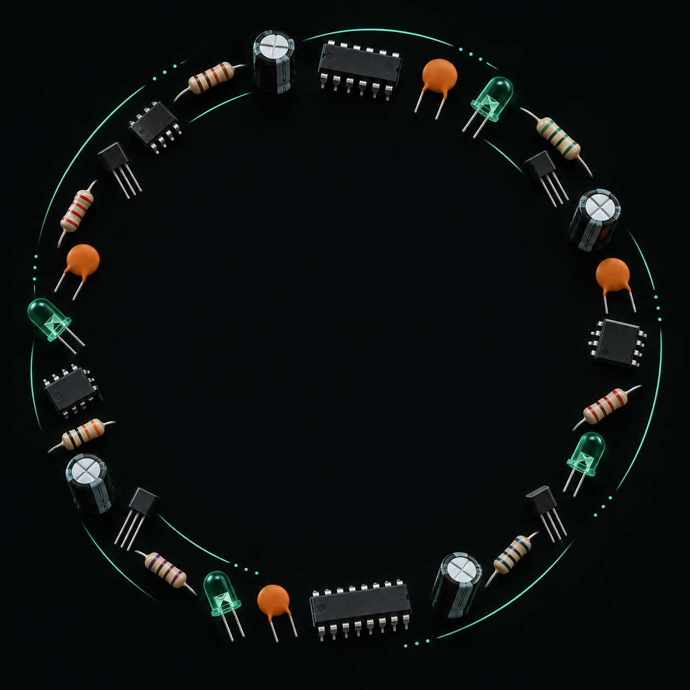

Provjeri zalihe
Pogledaj što imaš. Dodavanje i potrošnja pripadaju istoj evidenciji.
Otvori zalihe
Organiziraj komponente, isplaniraj što želiš izraditi i prati za što koristiš svoje dijelove.
HTML i CSS prototip · prikazani su ogledni podaci
Od pregleda zaliha do planiranja sljedeće ideje.
Pogledaj što imaš. Dodavanje i potrošnja pripadaju istoj evidenciji.
Otvori zaliheOdredi cilj, složi popis potrebnih dijelova i prati status izrade.
Pregledaj projekteIsprobaj čitač oznaka otpornika i nauči što znače obojeni prstenovi.
Otvori alateTek upoznaješ elektroniku? Kreni od vodiča kroz komponente.
Popis dijelova u projektu služi planiranju. Stanje zaliha mijenja se tek kada evidentiraš dodavanje ili potrošnju.